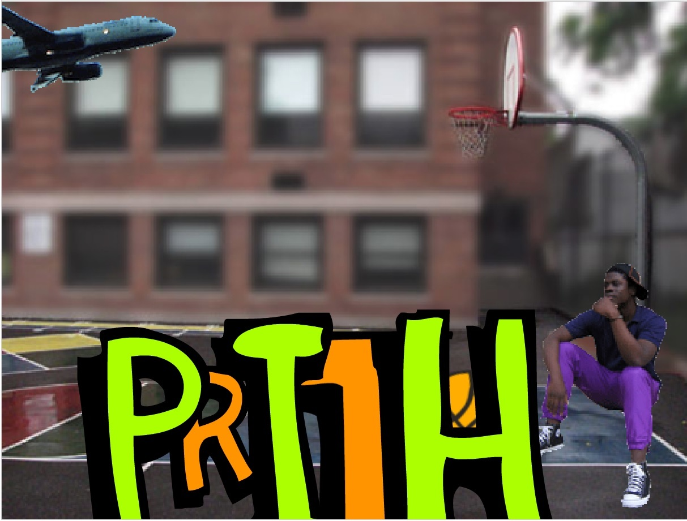
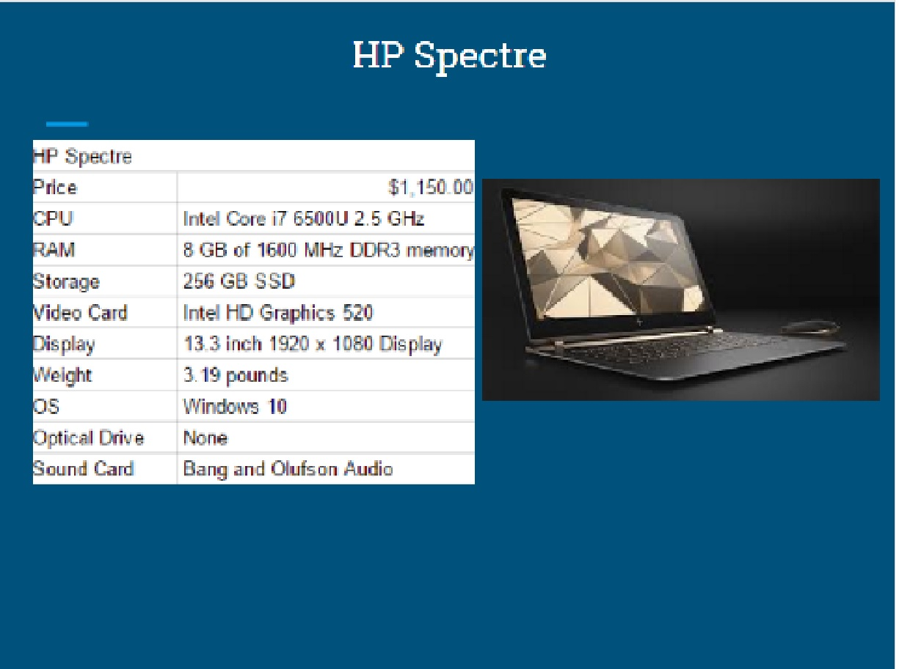
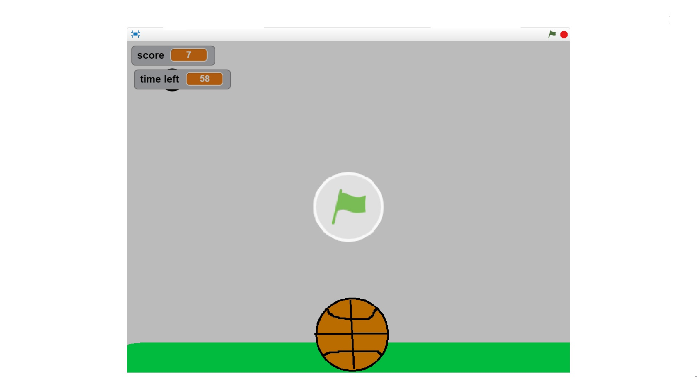

Scratch Content
Name Assignments

Discription
use scratch to design and create a program that shows my name. The requirements were to add a sprite for each letter in my name and give them 3 unique behaviors. The program needed to run when the green flag was clicked and for extra credit I added a function to reset the scene to the beginning of each time the green flag was clicked.
Concepts Learned:
- Using event blocks-green ,flag clicked, when key pressed
- Conditional statements- used if statements to
- Used loops- i used forever block to,,,,,,,,,,,,,I used a repeat block to……
- Sprites- I created my own sprites using the sprite editor, I used the library of sprites to find letters in my name and adjusted to the costumes…….
- Movement- I used the x and y values to make my sprites move to their original location and when the green flag was clicked i rotated the sprites to
- Learned how to use screenshots and upload to scratch
- Used green flag: green flag to switch to next slide until presentation was over
Computer Buying Project

Description
Used scratch to create a program that shows our slides that we edited and worked on in google docs. The requirements we needed to have is having each screenshot of each slide on scratch. The program needed to run when the green flag was clicked and each slide had to be different than the previous slide.
Concepts Learned
Final Project

Description
The requirement was to create a game or story that depends on what you picked. In my case, I picked game so it had to do the following: Let the player know if they win Keep score Have a timer Have a help screen with directions The game resets when the green flag is clicked The game stops when it is over Does the game get harder as you keep playing (more than one level)
Concepts Learned
The game I made involved switching slides using different keys. Basically if I pressed a then it would switch slides. So i used the event category with the green flag. I used motion to move the fall so it didn’t hit the apple. I used x and y values to randomize where the ball started at and where it would fall.